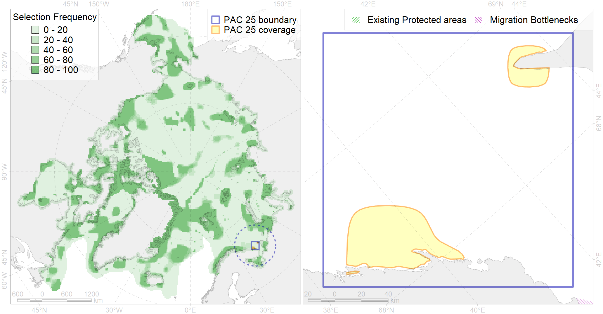

Region 25
Region 25
“ArcNet” scenario 33 achievement for region 25.
Use Accenter for advanced mode.

0
CFs inside of Region completely
1
CFs inside of Region at quarter
2
Complete-targets achievement by Region
3
Half-targets achievement by Region
| CF | Name | Target Achievement for Region | Proportion of Target Achievement in Region | Amount Proportion in Region |
|---|---|---|---|---|
| 7227 | Kelp forests of Kanin Cape | 200.9% | 63.7% | 56.9% |
| 5035 | Beluga of the White Sea summer core distribution | 27.0% | 26.2% | 20.4% |
| 7231 | Kelp forests of Murmansk coast | 116.1% | 41.4% | 18.8% |
| 7225 | Kelp forests of White Sea Gorlo | 78.3% | 66.8% | 15.7% |
| 6044 | Stellers eider (Polysticta stelleri) Atlantic wintering grounds | 14.3% | 13.8% | 8.4% |
| 7247 | seagrasses of the High Arctic | 19.0% | 10.4% | 6.2% |
| 6068 | Common eider (Somateria mollissima mollissima) Murman and Norway wintering grounds | 6.7% | 6.5% | 3.9% |
| 6021 | Long-tailed duck (Clangula hyemalis) North East Atlanticwintering grounds | 2.4% | 2.4% | 2.2% |
| 5034 | Beluga of the White Sea summer distribution | 4.5% | 2.7% | 1.4% |
| 3124 | polynya Mezen | 6.0% | 2.2% | 1.4% |
| 6043 | Stellers eider (Polysticta stelleri) Atlantic moulting&migration stopovers | 1.4% | 1.0% | 1.2% |
| 4072 | Range of the Pechora herring (Clupea pallaii suworowi) (F 9) | 7.4% | 2.1% | 1.1% |
| 6061 | Common eider (Somateria mollissima mollissima) SE Barents and Kara Sea breeding&moulting grounds | 1.4% | 1.3% | 1.0% |
| 2017 | Grey seal distribution range | 11.6% | 1.6% | 0.9% |
| 4043 | Range of Nawaga (Eleginus nawaga) (F37) | 5.6% | 1.6% | 0.8% |
| 4068 | Migration area of European Eel (Anguilla anguilla) (F5): | 2.8% | 1.5% | 0.8% |
| 4087 | Fish zoogeography, Arctic Region, Subarctic Transitional-Atlantic Province, Murman – Spitsbergen aquatory of the Barents District | 3.5% | 2.2% | 0.8% |
| 7064 | I.1.1.1. Coastal domain in the Barents Sea | 6.9% | 1.0% | 0.8% |
| 4089 | Fish zoogeography, Arctic Region, Subarctic Transitional-Atlantic Province, Mesen’ – Pechora aquatory of the Barents District | 2.2% | 1.0% | 0.6% |
| 4094 | Subarctic fish complex of the Barents region | 5.8% | 1.1% | 0.4% |
| 4052 | Range of the Fourhorn Sculpin (Myoxocephalus quadricornis) (F 45), American populations | 11.1% | 0.8% | 0.4% |
| 4030 | Feeding area of the Arctic charr (Salvelinus alpinus), anadromous populations (F28) | 0.9% | 0.7% | 0.4% |
| 1010 | Atlantic Walrus Winter Distribution in Pechora and Kara region | 0.9% | 0.6% | 0.4% |
| 2041 | Ringed seal whelping areas in the Barents Sea | 0.7% | 0.3% | 0.3% |
| 7066 | I.1.1.3. Shelf plains | 7.7% | 0.6% | 0.3% |
| 4054 | Range of the Shorthorn Sculpin (Myoxocephalus scorpius) (F 46), European populations | 7.4% | 0.5% | 0.3% |
| 5053 | Harbour porpoise feeding areas in the Barents Sea | 1.5% | 0.9% | 0.3% |
| 6106 | 6106 Urilomvilomvibreeding colonies | 0.4% | 0.3% | 0.2% |
| 3026 | Marginal Ice Zone distribution in April in the Barents Sea LME | 1.0% | 0.2% | 0.2% |
| 4058 | Range of the Arctic flounder (Liopsetta glacialis) (F48) | 3.0% | 0.4% | 0.2% |
| 6047 | Black-legged kittiwake (Rissa tridactyla pollicarius) breeding colonies | 0.3% | 0.3% | 0.2% |
| 4027 | Feeding/migration area of the Atlantic salmon (Salmo salar) American populations (F27) | 0.9% | 0.6% | 0.2% |
| 2003 | Bearded seal whelping areas in the Barents Sea | 0.5% | 0.2% | 0.2% |
| 6099 | 6099 Rissa tridactyla tridactyla breeding colonies | 0.3% | 0.3% | 0.2% |
| 4057 | Range of the American Plaice (Hippoglossoides platessoides) (F 47), American populations | 5.1% | 0.5% | 0.2% |
| 4049 | Range of the Haddock (Melanogrammus aeglefinus) (F 42) | 2.4% | 0.4% | 0.2% |
| 4021 | Feeding area of the Inconnu (Stenodus leucichthys nelma), Euro-Asian populations (F 22) | 0.2% | 0.1% | 0.1% |
| 4046 | Range of the Thorny Skate (Amblyraja radiata) (F 3) | 1.0% | 0.2% | 0.1% |
| 4045 | Feeding/migration area of the Pink Salmon (Oncorhynchus gorbuscha), native distribution (F23) | 1.1% | 0.2% | 0.1% |
| 4008 | Feeding / nursery area of the Arctic Cisco (Coregonus autumnalis), Eurasian populations (F 14) | 0.1% | 0.1% | 0.1% |
| 4003 | Range of the Atlantic Capelin (Mallotus villosus) (F10) | 2.0% | 0.2% | 0.1% |
| 4017 | Feeding/ migration area of the Greenland Shark (Somniosus microcephalus) (F1) | 0.3% | 0.2% | 0.1% |
| 5007 | Beluga of the Barents-Kara-Laptev Sea stock general distribution | 0.2% | 0.1% | 0.1% |
| 4006 | Feeding/nursery area of the Pacific rainbow smelt (Osmerus dentex) (F12) | 0.2% | 0.1% | 0.1% |
| 6049 | Black-legged kittiwake (Rissa tridactyla tridactyla) wintering grounds | 0.0% | 0.0% | 0.0% |
| 4041 | Range of the Polar Cod (Boreogadus saida) (F35) | 0.2% | 0.1% | 0.0% |
| 6083 | Thick-billed murre (Uria lomvia lomvia) wintering grounds | 0.1% | 0.1% | 0.0% |
| 5112 | Arctic Cetaceans (beluga, bowhead, narwhal) winter habitats as predicterd by MIZ | 0.0% | 0.0% | 0.0% |
| 1009 | Atlantic Walrus Summer Distribution in Pechora and Kara region | 0.0% | 0.0% | 0.0% |
| 7067 | I.1.1.4. Shelf troughs | 0.3% | 0.0% | 0.0% |